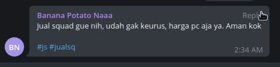
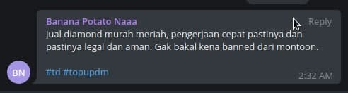
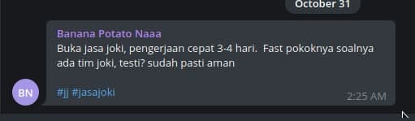
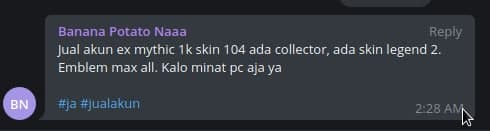
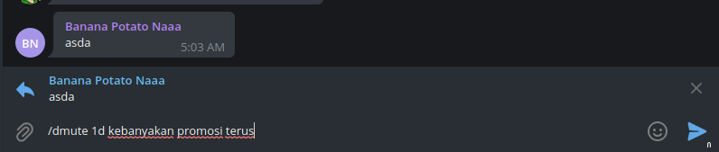

Perintah-Perintah untuk Admin
Pirate-King
-
29 October 2021
Jangan lupa bergabung ke Grup Chat Mabar Mobile Legends di Telegram GC ML
Daftar isi:
Perintah mute anggota
Perintah banned anggota
Perintah kick anggota
Perintah filters pesan
Perintah blocklist pesan
Perintah peringatan
Anggota buka squad
Anggota cari squad
Anggota bukalapak
Sematkan pesan atau Pin message
Spam pesan
Perintah melihat peraturan atau rules pada group
Daftar isi akan selalu di update*
1. Perintah mute anggota
Perintah ini digunakan untuk membisukan anggota di grup. Ada 3 perintah untuk membisukan anggota, yaitu:
Perintah mute
Ini untuk mute atau membisukan secara permanen. Dengan ini anggota tidak bisa mengirim pesan selama nya.
Perintah nya adalah:
/mute @usernameAnggota alasan di mute
Bisa juga dengan me-reply pesan orangnya. Perintah nya adalah:
/mute alasan di mute
Perintah tmute
Ini untuk mute atau membisukan dengan waktu tertentu. Ini berformat Bahasa Inggris dari menit-minggu.
m = minute = menit
h = hour = jam
d = day = hari
w = week = minggu
Perintah nya adalah:
/tmute @usernameAnggota 1d alasan di mute
Bisa juga dengan me-reply pesan orangnya. Perintah nya adalah:
/tmute 1d alasan di mute
Perintah unmute
Ini untuk menghapus mute pada seseorang. Perintah nya bisa digunakan saat reply pesan atau tag orang. Perintah nya adalah:
/unmute
Perintah dmute
Ini untuk membisukan / mute orang sekaligus menghapus pesannya
/dmute
Kembali ke Daftar isi
2. Perintah banned anggota
Perintah ini digunakan untuk membanned anggota dari grup.
Perintah nya sama dengan mute, akan tetapi disini meggunakan:
/ban
Untuk ban anggota secara permanen
/tban
Untuk ban anggota dengan waktu tertentu
/unban
Untuk membuat anggota dapat bergabung kembali ke group.
/dban
Untuk ban anggota sekaligus menghapus pesannya
Kembali ke Daftar isi
3. Perintah kick anggota
Perintah ini digunakan untuk mengeluarkan anggota dari grup.
Perintah nya adalah:
/kick @username
Untuk mengeluarkan anggota dari grup bisa dengan cara tag username nya
/kick
Untuk mengeluarkan anggota dari grup bisa dengan cara reply pesannya
Kembali ke Daftar isi
7. Anggota buka squad
Apabila ada anggota yang sedang open squad atau mencari member squad.
Kita sebagai admin cukup reply pesan dia lalu ketikan perintah #carimember
Kalau sudah di-reply pesannya tolong jangan dihapus pesan kita nya. Biarkan saja, biar orang yang open squad dapat membaca format open squad.
Kembali ke Daftar isi
8. Anggota cari squad
Apabila ada anggota yang sedang cari squad, kita cukup reply pesannya dan kita arahkan ke channel @nemu_sq .
Kembali ke Daftar isi
9. Anggota bukalapak
Khusus anggota yang promosi untuk bukalapak entah itu jual squad, buka jasa joki, jual akun ataupun buka topup diamond.
Jual squad
Ketika anggota ada yang jual squadnya. Pastikan dia sudah sesuai format jual squad. Lihat gambar dibawah, format yang benar.

Format wajib ada 2 hashtag, yaitu: #js #jualsq
Kalo dia tidak memberikan format wajib, cukup reply pesannya dan ketikan perintah format js
Topup diamond
Ketika anggota ada yang buka Topup Diamond. Pastikan dia sudah sesuai format topup diamond. Lihat gambar dibawah, format yang benar.

Format wajib ada 2 hashtag, yaitu: #td #topupdm
Kalo dia tidak memberikan format wajib, cukup reply pesannya dan ketikan perintah format td
Jasa joki
Ketika anggota ada yang buka Jasa Joki. Pastikan dia sudah sesuai format jasa joki. Lihat gambar dibawah, format yang benar.

Format wajib ada 2 hashtag, yaitu: #jj #jasajoki
Kalo dia tidak memberikan format wajib, cukup reply pesannya dan ketikan perintah format jj
Jual akun
Ketika anggota ada yang buka Jual Akun. Pastikan dia sudah sesuai format jual akun. Lihat gambar dibawah, format yang benar.

Format wajib ada 2 hashtag, yaitu: #ja #jualakun
Kalo dia tidak memberikan format wajib, cukup reply pesannya dan ketikan perintah format ja
Kembali ke Daftar isi
10. Sematkan pesan atau Pin message
Untuk menyematkan atau pin pesan. Ini digunakan jika ada anggota yang sedang ngajak mabar, share tournament, dan yang lain. Yang pastinya penting.
Apabila ada pesan yang disematkan oleh admin lain, batas nya 2 jam setelah pesan itu di pin. Jika belum 2 jam, jangan langsung membuat pin baru.
Kembali ke Daftar isi
11. Spam pesan
Ketika ada anggota yang mengirim pesan secara terus menerus berulang kali. Untuk anggota yang sedang bukalapak batas maksimal promosi nya 4x perhari.
Jika ada anggota yang promosi sudah 4x, mohon diingatkan kalau dia sudah maksimal promosi 4x perhari.
Jika anggota itu masih ngeyel tetep promosi sampai 4x lebih. Langsung replay pesannya yang lebih dari 4x promosi. Ketikan perintah: /dmute 1d alasan di mute

Kembali ke Daftar isi
12. Perintah melihat peraturan atau rules pada group
Untuk ngasih tau ke anggota peraturan di group ini apa, atau ketika ada anggota yang nanya tentang peraturan di group ini.
Admin bisa reply pesan anggota lalu ketikan perintah /rules .
Kembali ke Daftar isi